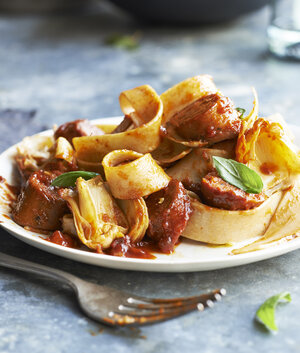
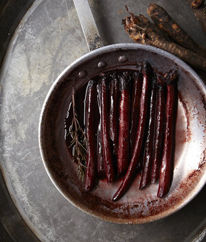
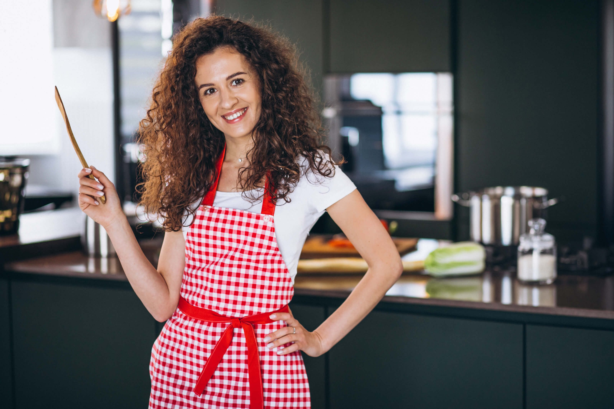

Minha experiência
Sou uma chef intuitiva, aprendi com a prática. Assim que consegui segurar uma colher, comecei a ajudar minha mãe e minha tia a preparar as refeições da família. Essas experiências me motivaram a estudar nutrição, e agora combino meu amor pela comida com um estilo de vida saudável para ajudar os clientes a se alimentarem e viverem melhor.
- Sous-chef 2012 – 2015
- Serviços de consultoria 2015 – Presente


Em um mundo em que as doenças modernas são causadas por trabalho e estilo de vida, os alimentos são o melhor remédio. Ensino meus clientes a fazerem pequenas mudanças na alimentação que representam ganhos importantes em longo prazo.

“O método de Colette é incrível. Mudei totalmente meus hábitos alimentares, mas nunca senti que estava perdendo nada.”
